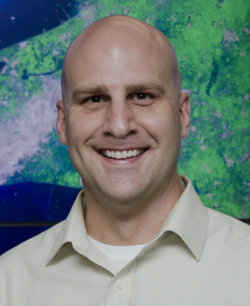

Mark McInerney
Former NASA director of UAP research

Became NASA's first director of UAP research in 2023 and held the post until July 2025. Before that he was NASA's liaison to the Department of Defense on UAP. 1
Open in the interactive Watcher
Related
- Director of UAP research First director, named 2023
Sources
- Mark McInerney Wikipedia